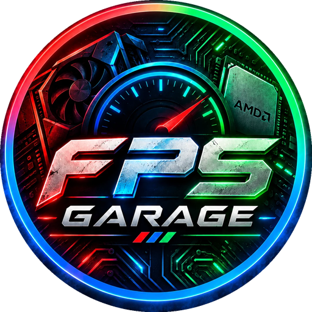

FPS GARAJI Optimizer, Windows'u oyun için ayarlar, bilgisayarını tarayıp FPS kaybettiren sorunları bulur ve BIOS'ta adım adım yol gösterir. Farkı kendi FPS testinle görürsün; beğenmezsen her şey tek tıkla eski haline döner.
Kurulum gerekmez · Boost ve Analiz ücretsiz
Forumlarda en çok önerilen ve gerçekten işe yarayan ayarlar; güvenliği azaltan "hileli" ayarlar yok.
Masaüstü veya laptop seç, Dengeli ya da Yarış modunda tek tıkla optimize et. Güç planı, oyun modu, ağ ve gecikme ayarları cihazına göre uygulanır.
Bilgisayarını tarar, puan verir. Tek kanal RAM, kapalı XMP, eski sürücü gibi FPS kaybettiren sorunları nedenleriyle listeler.
İşlemci ve ekran kartı sıcaklığı, BIOS'un güncel olup olmadığı (Intel 13./14. nesil ve AM5 için kritik uyarılar), sürücü yaşı.
Ortalama, %1 ve %0.1 düşük FPS ölçümü. Boost öncesi ve sonrası aynı grafikte; oyun üstü canlı FPS göstergesi.
Anakart markana göre XMP/EXPO, Resizable BAR ve daha fazlası; menü yolu ve vurgulu ekran görüntüleriyle adım adım.
Steam, Epic, Riot, Battle.net, EA, Ubisoft, GOG ve Xbox oyunlarını bulur. Oyun açılınca otomatik performans oturumu, oyun içi ayar önerileri.
Lag evde mi, hatta mı? Wi-Fi bandı ve hat analiziyle sorunun nerede olduğunu gösterir.
Geçici dosyalar, güncelleme önbelleği, açılışta çalışan gereksiz uygulamalar ve sistem onarımı.
Uygulanan her ayar zaman çizelgesinde. İstediğini tek tek, istersen hepsini birden geri al.
Temsili görünüm. Değerler bilgisayarına göre değişir.
Tek dosya, kurulum yok. Ayarları değiştirebilmek için yönetici izni ister.
Önce bilgisayarın taranır, sonra cihazına uygun ayarlar uygulanır. Öncesinde otomatik geri yükleme noktası oluşturulur.
FPS testini Boost öncesi ve sonrası çalıştır, sonucu aynı grafikte karşılaştır. Beğenmezsen tek tıkla geri al.
Optimizasyon programlarının kötü ününü biliyoruz. Bu yüzden her şeyi şeffaf yaptık.
Her değişiklik kaydedilirDeğişen her değerin eskisi saklanır; tek tek ya da toplu geri alınır.
Otomatik geri yükleme noktasıHer uygulamadan önce Windows geri yükleme noktası oluşturulur.
Güvenliği azaltan ayar yokDefender, Bellek Bütünlüğü veya Spectre korumalarını kapatmayız; nedenini programda açıkça yazarız.
"Ne değişir?" her ayardaHangi kayıt defteri değerinin değiştiğini uygulamadan önce görürsün.
Kişisel veri gönderilmezİnternete yalnızca ping testi ve key etkinleştirme sırasında bağlanır.
Cihazına özelLaptop, masaüstü, X3D ve hibrit işlemcileri tanır; uymayan ayarları uygulamaz.
Ücretsiz sürümle Boost ve Analiz'i hemen kullan. Tüm özellikler için Premium key al.
Program yalnızca Windows'un kendi ayarlarını değiştirir; değişen her değerin eskisini kaydeder ve öncesinde geri yükleme noktası oluşturur. Güvenliği azaltan ayarlar (Defender, Bellek Bütünlüğü, Spectre korumaları) hiç uygulanmaz.
Bilgisayara göre değişir. Ayarları zaten iyi olan bir sistemde fark küçük olur; kapalı XMP, yanlış güç planı veya arka plan kaydı açık olan sistemlerde belirgin olabilir. Bu yüzden programda Boost öncesi ve sonrası ölçen bir FPS testi var. Rakam vaat etmiyoruz, ölçmeni istiyoruz.
Bu, Windows'un yeni ve az indirilmiş programlar için gösterdiği bir uyarıdır, virüs uyarısı değildir. "Ek bilgi" ve ardından "Yine de çalıştır"a tıklaman yeterli. Program indirildikçe bu uyarı kendiliğinden kalkar.
Her key tek bilgisayar içindir; ilk girildiği bilgisayara bağlanır. Etkinleştirirken bir kez internet gerekir, sonrasında internetsiz çalışır.
Shopier'den ödemen onaylandıktan sonra key, siparişte yazdığın e-posta adresine gönderilir. Gelmezse spam klasörünü kontrol et veya bize yaz.
Bize sipariş bilgilerinle yaz, key'ini yeni sisteme taşıyalım.
Windows 10 (1809 ve üzeri) ve Windows 11, 64 bit. Masaüstü ve laptopları ayrı tanır. Ayarları değiştirebilmek için yönetici izni gerekir.
Program oyunların dosyalarına veya belleğine dokunmaz; yalnızca Windows ayarlarını değiştirir. İsteğe bağlı işlemci sıcaklığı sürücüsünü (PawnIO) kurarsan ve bir oyunun hile koruması uyarı verirse, sürücüyü Ayarlar > Uygulamalar'dan kaldırman yeterli.